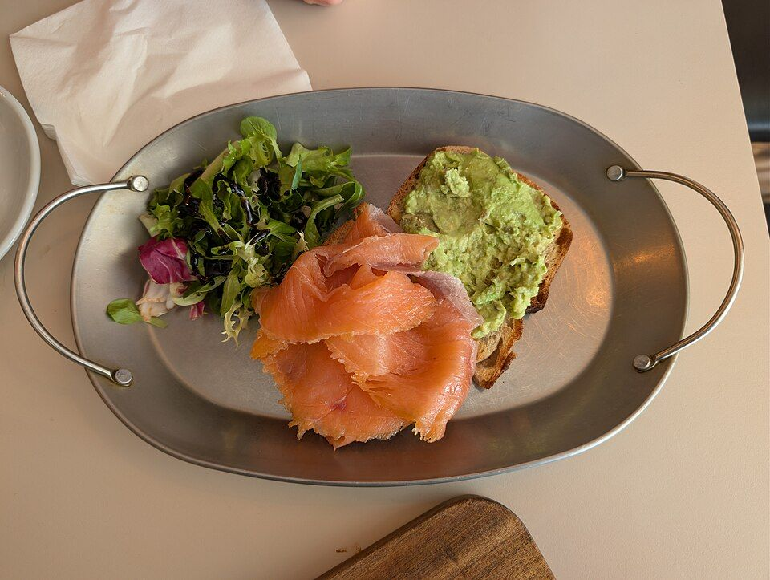
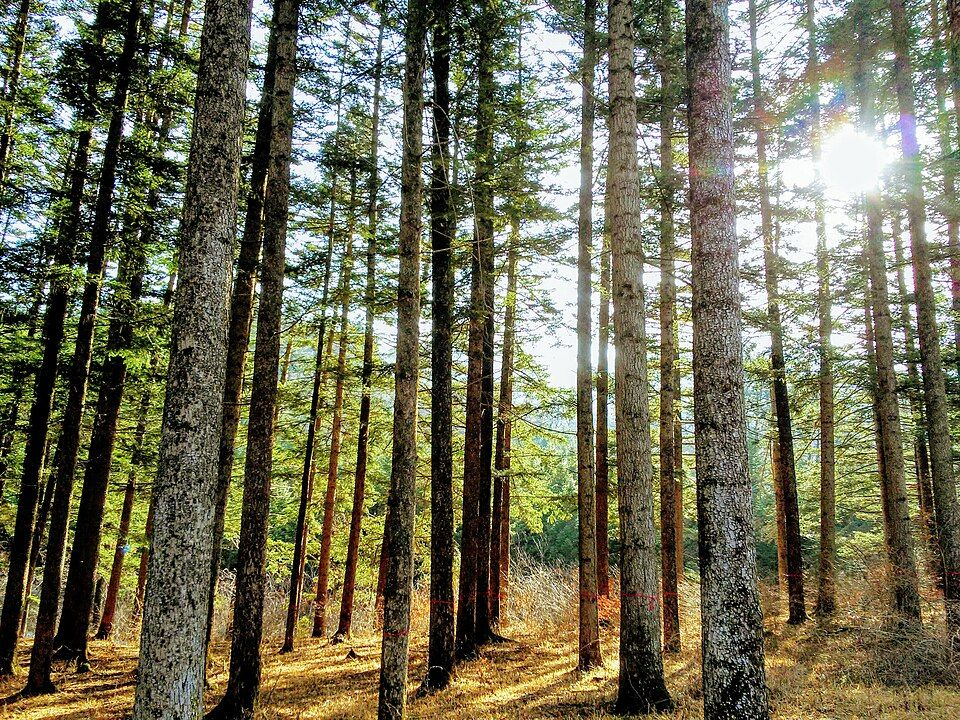
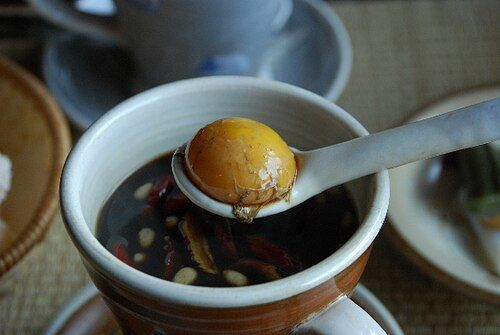
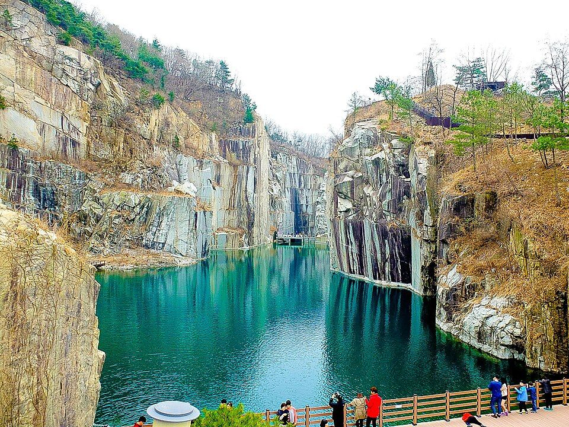
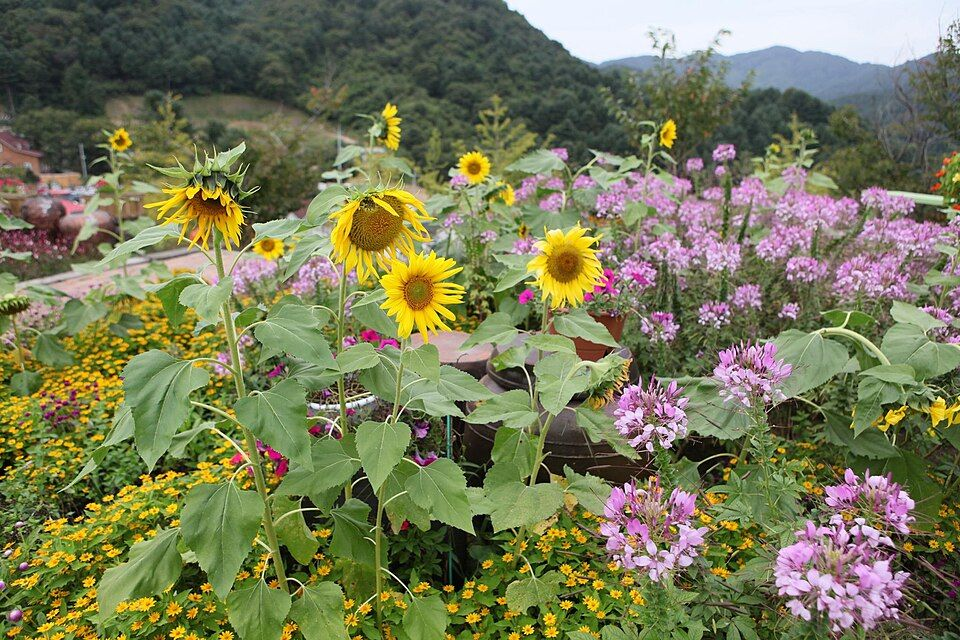
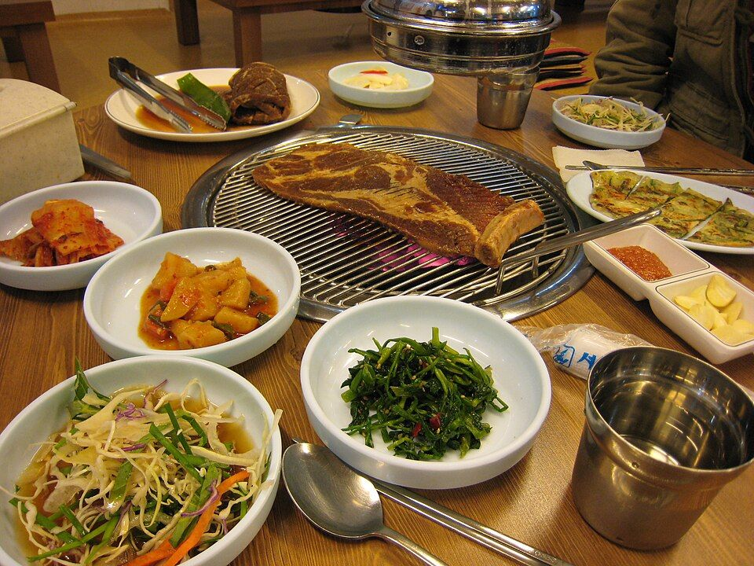

2026년 11월 1일 일요일 · 당일치기 드라이브

메뉴 예시 · 아보카도 오픈샌드위치 📷 정원 사진 © Andy Li · CC0나무와 꽃이 가득한 정원 속 브런치 카페. 테라스·정원·소파존·텐트존까지 자리가 다양하고 실내에도 식물이 많아 사진이 예쁘게 나와요. 브런치 메뉴만 16가지.

© Pulpitara · CC BY-SA 3.0500년 넘게 보존된 광릉숲 속 수목원. 주차 예약이 마감이라 봉선사 주차장에 차를 두고 광릉숲 단풍길을 따라 걸어 들어가요. 차로만 지나치던 숲길을 둘이 걷는 것 자체가 코스예요.

메뉴 예시 · 계란쌍화차 📷 한옥 사진 © 허수자 · CC BY 2.0 KR종로에 있던 100년 넘은 한옥 두 채를 옮겨와 'ㄷ'자로 복원한 카페. 금강송 서까래와 전통 기와 아래, 마당 단풍을 보며 대추차·쌍화차를 마시는 고즈넉한 시간. 기념일 사진 찍기 제일 좋은 곳이에요. 숲길을 걷고 난 뒤 따뜻한 차와 디저트로 쉬어가기 딱이에요.

© Sakku Cat · CC BY 3.0버려진 화강암 채석장이 문화공간으로 바뀐 곳. 깎아지른 절벽 아래 에메랄드빛 천주호와 단풍이 어우러져요. 올라갈 땐 모노레일, 내려올 땐 조각공원 산책로로 걸어 내려오는 코스 추천.

📷 야경 사진 © Jinho Jung · CC BY-SA 2.0지중해풍 허브 마을. 노을 무렵 들어가 허브식물박물관·베네치아 마을을 둘러보고, 날이 어두워지면 불빛터널과 산타마을 조명이 켜져요. 하루의 하이라이트 사진은 여기서 💛

메뉴 예시 · 갈비 한상 📷 가게 사진 © karendotcom127 · CC BY 2.0저녁은 포천 대표 음식 이동갈비로 기념일 마무리. 송우리 시내라 고속도로 IC와 가까워 식사 후 바로 귀가할 수 있어요. 밑반찬·샐러드가 푸짐하게 나와요.
목표 22:00 귀가에 여유 15분. 일요일 저녁 상행 정체가 있으면 조금 늦어질 수 있어요.
🍁
세 번째 가을도 함께 걸어줘서 고마워.
앞으로의 모든 계절도 같이 보자.